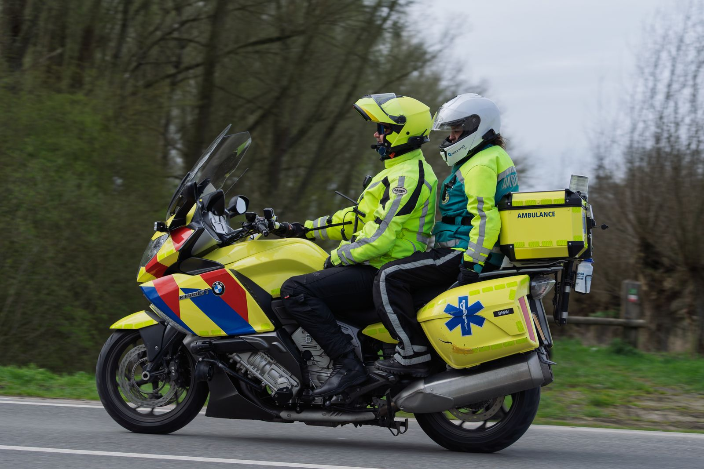

Innovative healthcare solutions
Revolutionizing healthcare, saving lives, empowering communities
Embrace a world of comprehensive healthcare where your well-being takes center stage.
Explore services
Built for real life
Innovative. Patient-centered. Convenient. Comprehensive. Accessible.
Health-Hub Africa combines cutting-edge technology with compassionate care to make high-quality medical services more accessible, efficient and affordable.
Discover our storyIntegrated services
One network.
More ways to care.
From an urgent response on the road to a consultation from home, each service is designed to close a specific gap in access.
DispatchCare™
Rapid emergency response and on-scene stabilization.
↗ 02MinuteCare™
Convenient walk-in care for everyday health needs.
↗ 03CareTest™
Accurate diagnostics with timely, understandable results.
↗ 04TeleCare™
Professional medical guidance wherever you are.
↗ 05—07More connected care
TravelSafe™, MyHealth Vault+™ and HealthConsult™.
↗24/7 rapid response
Emergency care that moves through the city.
DispatchCare™ deploys equipped motorcycle response units that can move through traffic quickly, deliver critical on-scene care and coordinate onward hospital support.
Care designed around different people, places and moments.
Who we serve
Healthcare should meet people where they are.
Individuals & families
Everyday care, emergency support, diagnostics and ongoing health management.
Businesses & organisations
Workplace health, screenings, event cover and employee wellbeing support.
Communities & schools
Mobile services, outreach, emergency support and preventive programmes.
Seniors & home-based care
Accessible follow-up, chronic-condition support and virtual consultations.
Connected healthcare
Built for access, not waiting rooms.
How care works
Simple access.
Clear next steps.
The right entry point depends on what you need. Our network helps connect you to emergency, clinic, diagnostic or virtual care.
Tell us what you need
Call the emergency line, visit a nearby location or contact the Health-Hub team.
Connect to the right care
We direct you to the service and clinical team best suited to your situation.
Receive care and follow-up
Get treatment, results, advice and coordinated support for what comes next.
“We believe healthcare should be accessible to everyone.”
Frequently asked
Answers,
clearly.
Yes. DispatchCare provides rapid on-site stabilization for medical emergencies before coordinating transport or further treatment when required.
Response teams can include trained physicians, nurses, paramedics, medical technicians and other professionals based on the situation.
Yes. Health-Hub supports patients with and without insurance. Contact the team for current service costs and available payment options.
Health-Hub operates across multiple Lagos locations and supports communities through mobile and virtual services. Contact us to confirm the nearest option.
Start here
Better care begins with access.
Speak with our team, find a nearby clinic or learn which service is right for you.